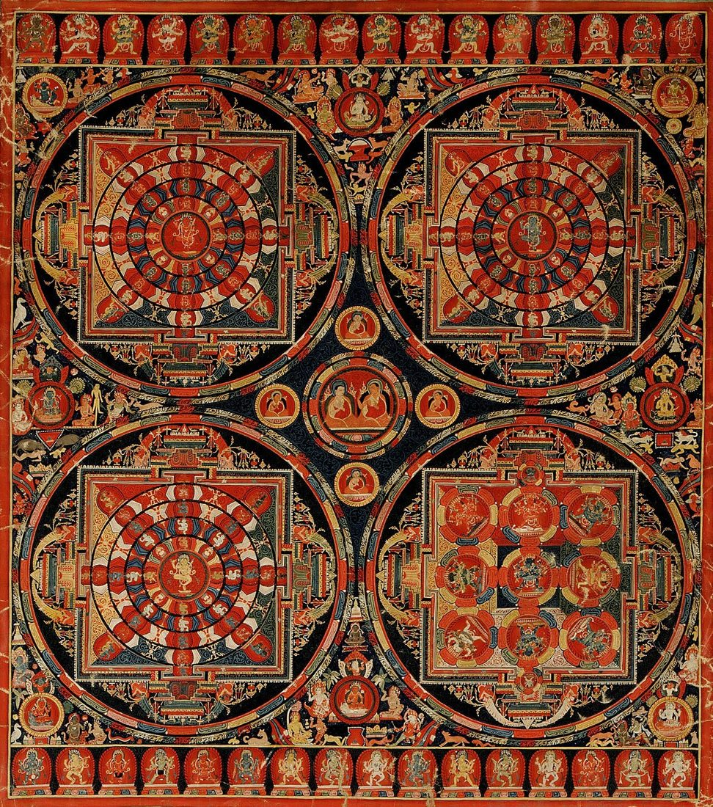
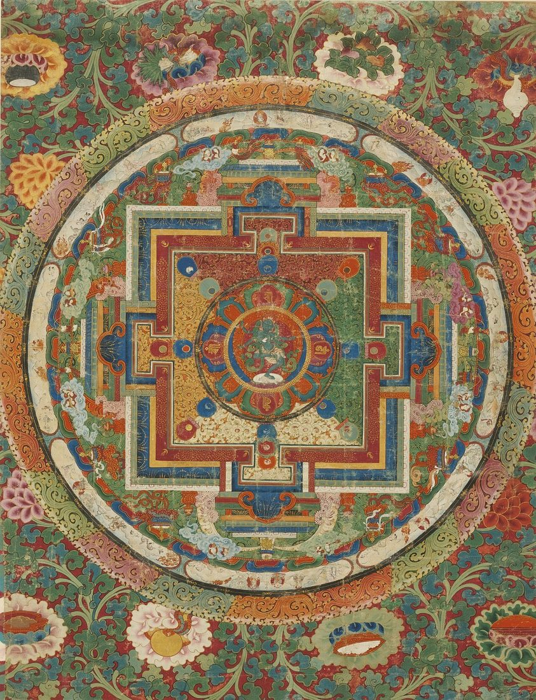

Mandala Thangka Symbolism: A Guide to the Sacred Circle
At first glance, a mandala thangka looks like pure geometry: circles inside squares inside circles, ringed with flames and filled with tiny, precise figures. Look longer and it becomes a map. In Tibetan Buddhist art, a mandala is a picture of an enlightened world seen from above, with a deity at its center and every ring, gate, and color carrying a meaning that a practitioner can walk through in the mind.
This guide explains the main parts of a mandala thangka from the outside in, what the colors and directions stand for, and how these paintings are used. Once you know how to read one, you will never see a mandala as simple decoration again.

What Is a Mandala Thangka?
The Sanskrit word mandala is often translated as "circle," and in the Tibetan tradition it describes the sacred dwelling of a meditation deity together with its surroundings. Mandalas can be built from colored sand, cast in metal, visualized entirely in the mind, or painted on cotton canvas as a thangka. The painted version has a special advantage: it is permanent and portable, so it can guide study and meditation for years.
Each mandala belongs to a particular deity and practice, so the figures and colors change from one painting to another. The overall structure, however, follows a shared pattern. Collectors who want to study that pattern closely often prefer to Buy authentic thangka painting from workshops where painters still lay out the geometry by hand with compass and straight edge before a single color is applied.
Reading a Mandala from the Outside In
The ring of fire
The outermost circle is usually a band of multicolored flames. It represents the fire of wisdom, which burns away ignorance and marks the boundary between ordinary experience and the sacred space within. In meditation, crossing it is a symbolic act of purification.
The vajra circle
Inside the flames is a ring of vajras, the thunderbolt or diamond scepter of Tibetan Buddhism. It stands for indestructibility and the unbreakable quality of awakened mind, a protective wall that nothing harmful can pass.
The eight charnel grounds
Many mandalas of wrathful or tantric deities include a ring of eight charnel grounds, small scenes of cremation sites, trees, and wandering figures. They are reminders of impermanence and of the eight forms of consciousness that must be transformed on the path.
The lotus circle
A ring of lotus petals often follows, symbolizing purity and renunciation. Just as a lotus rises clean from muddy water, the mind can rise above confusion.
The Palace and Its Four Gates
At the heart of the circles sits a square palace, drawn as if seen from above with its walls folded flat. It has four elaborate T-shaped gateways, one facing each cardinal direction. The gates tell the viewer that awakening can be approached from any direction and by many methods. Above each gate you will often see a Dharma wheel flanked by two deer, a reference to the Buddha's first teaching at the Deer Park in Sarnath.
The walls are frequently painted in five bands of color, and the palace is decorated with garlands, parasols, banners, and offering goddesses. Every element is an aspect of the enlightened qualities of the central deity, laid out like rooms in a building you can tour in meditation.
Colors and Directions
In many mandalas the four quarters of the palace and the center are associated with five colors and with the five Buddha families. The exact arrangement varies with the practice, but a common scheme looks like this:
- White, often in the east: clarity and purification of anger into mirror-like wisdom.
- Yellow, often in the south: richness and the transformation of pride into the wisdom of equality.
- Red, often in the west: compassion and the transformation of desire into discriminating wisdom.
- Green, often in the north: activity and the transformation of jealousy into all-accomplishing wisdom.
- Blue, at the center: the vast, all-encompassing wisdom that sees things as they are.
Traditionally, the east is placed at the bottom of the painting, closest to the viewer, so the mandala is entered through the gate facing you.

The Central Deity
In the very center, sometimes inside an inner lotus, is the main deity of the mandala, or a symbol representing it such as a seed syllable or a vajra. Around it may sit attendant deities in the petals of the lotus and the quarters of the palace. The whole painting is in a sense a portrait of that deity's mind, with the surrounding figures as expressions of its qualities. Well-known examples include the mandalas of Kalachakra, Chakrasamvara, Vajrabhairava, Hevajra, and the Medicine Buddha.
Mandalas and Other Assembly Paintings
A mandala is not the only thangka that gathers many figures into one ordered vision. Paintings of the field of merit arrange an entire lineage of teachers, buddhas, scriptures, and protectors on the branches of a great tree, and they are read in a similar way, from a center outward. Our guide to the refuge tree thangka explains how that composition works.
How a Mandala Thangka Is Used
A mandala thangka is a support for visualization. A practitioner imagines entering through the eastern gate, moving inward ring by ring, and finally meeting the deity at the center, sometimes recognizing that the palace and the deity are reflections of their own potential for awakening. Teachers also use painted mandalas during initiations and teaching, and many people keep one in a study or meditation room simply as a focus for calm and attention.
For a home, a mandala thangka works best where it can be seen clearly, at or above eye level and in steady, indirect light, so the fine linework is easy to follow. When choosing one, look closely at the symmetry, the crispness of the gold outlines, and whether the figures in each quarter are finished with the same care. If those details matter to you, Buy authentic thangka painting from a source that can tell you which deity and practice the mandala depicts.
Frequently Asked Questions
Is a mandala thangka the same as a sand mandala?
They share the same structure and meaning. A sand mandala is made for a ceremony and then ritually dismantled, while a painted thangka is meant to last.
Do I need to be Buddhist to own one?
No. Many people appreciate mandalas for their beauty and as a support for focus. Treating the painting with respect is what matters.
Why do some mandalas look peaceful and others fierce?
The tone follows the central deity. Peaceful deities have calm, open mandalas, while wrathful protectors are surrounded by charnel grounds and flames that symbolize cutting through obstacles.
Which direction should the bottom of the mandala face?
Hang it upright as painted. The bottom of the image represents the eastern gate, the traditional entrance.
Conclusion
A mandala thangka is a carefully drawn invitation. Its ring of fire, vajra wall, lotus petals, four gates, and five colors all lead the eye, and the mind, toward the center. Learning to read those layers turns a beautiful pattern into a meaningful journey, one you can take again every time you sit in front of it.